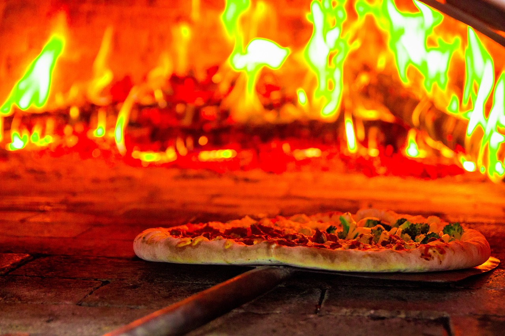
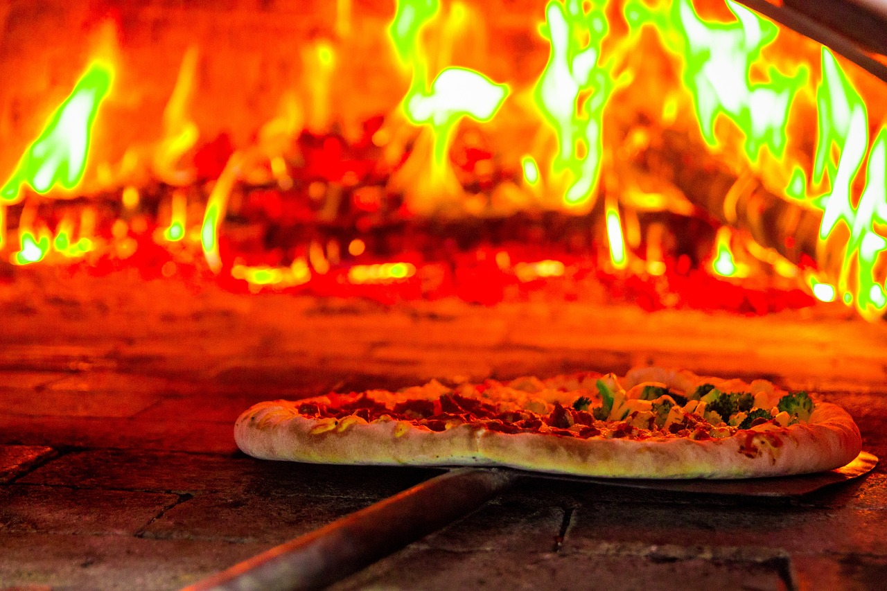

About Us
About Us: The Pizza Fornary Experience
Welcome to the ultimate pizza buffet experience, where the love for pizza meets the joy of endless choices. At Pizza Fornary, we have dedicated ourselves to providing a dining adventure that celebrates the diversity, creativity, and pure indulgence of one of the world's favorite foods: pizza.
Our Story: A Slice of History
Our journey began with a passion for pizza that couldn't be contained within the limitations of a single menu. In 2020, a group of pizza enthusiasts came together with a mission to redefine the pizza experience.
The Pizza Fornary Philosophy: Infinite Possibilities
At Pizza Fornary, we believe that pizza is a canvas for culinary creativity. It's not just a dish; it's an expression of taste, texture, and imagination. Our philosophy revolves around the celebration of this versatility, allowing our patrons to have a hand in creating their perfect pie. With our pizza buffet concept, the possibilities are infinite.
Quality and Freshness: The Heart of Our Buffet
Our commitment to quality is evident in every slice. We insist on using only the finest and freshest ingredients, sourced from local providers whenever possible. From our house-made sauces to the dough that's crafted daily, every component is treated with care and attention to ensure that our pizza buffet is an epitome of flavor.
Craftsmanship: Pizza Artisans at Work
Behind the buffet is a team of dedicated pizza artisans who approach their craft with precision and passion. Our pizza makers are true masters in their art, skillfully stretching the dough, artfully layering toppings, and expertly baking each pizza to perfection. It's this dedication that makes each pizza a masterpiece of culinary craftsmanship.
Variety and Versatility: Beyond the Traditional
Our pizza buffet is a culinary journey that ventures beyond the boundaries of the ordinary. While we pay homage to classic favorites like Margherita and Pepperoni, we also explore uncharted territories with gourmet creations that showcase unique and unexpected flavors. From mouthwatering meat lovers' combinations to an array of vegetarian delights, there's something for every palate.
Environmental Responsibility: A Commitment to Sustainability
At Pizza Fornary, we are committed to the well-being of the planet. We take our environmental responsibility seriously, implementing sustainable practices to reduce waste and minimize our carbon footprint. We believe in enjoying pizza while preserving the Earth for future generations.
Join Us for the Pizza Buffet Experience:
We invite you to join us in this pizza buffet journey. Whether you're a longtime pizza aficionado or someone seeking a new culinary adventure, our buffet is a world of options waiting for you to explore. Come, create memories, savor the delights, and be a part of our ever-expanding pizza-loving family. Thank you for choosing us, and we look forward to serving you an incredible buffet experience for years to come.

 
